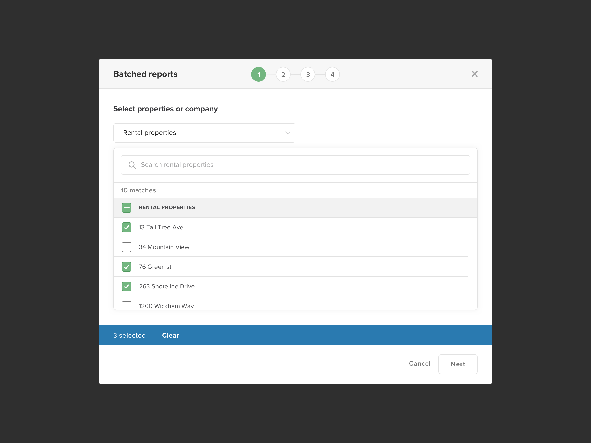
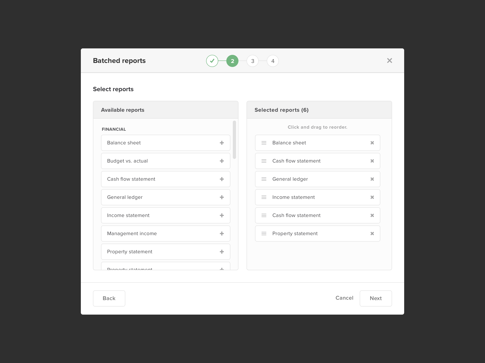
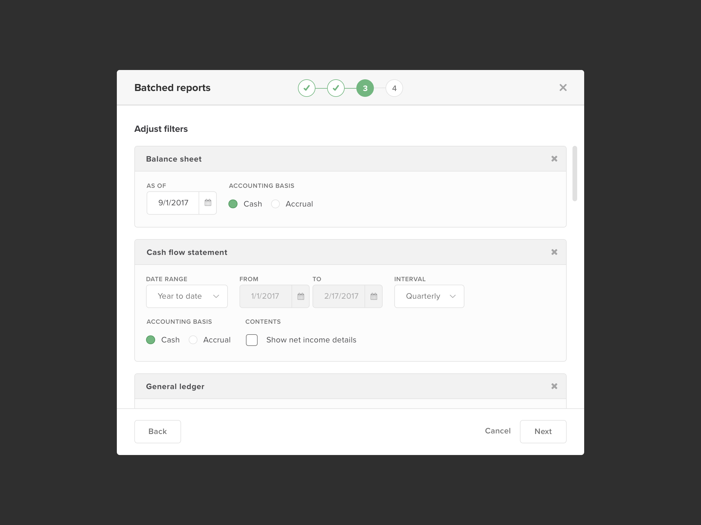
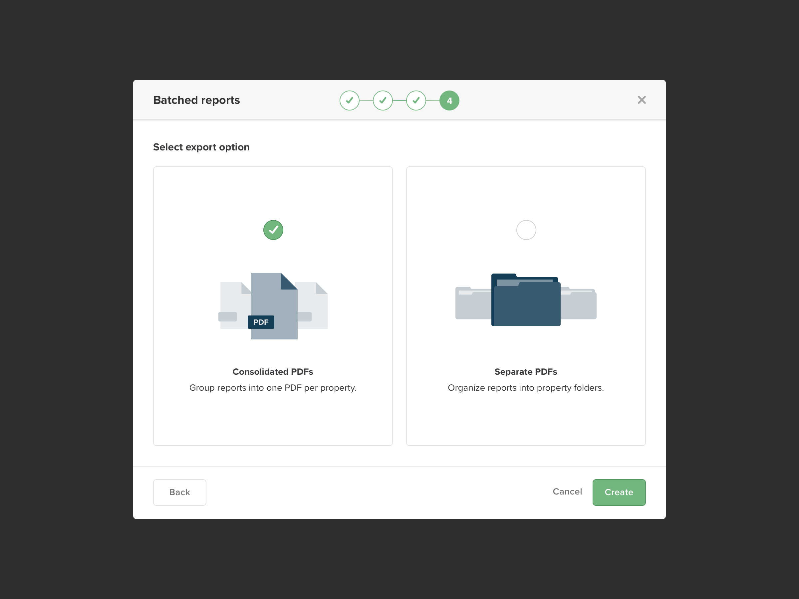
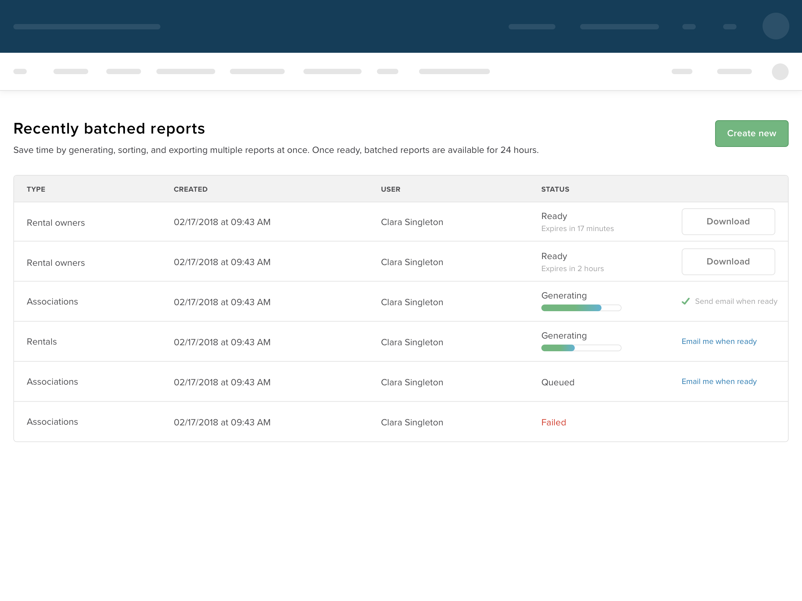

Batched reports
All the reports you need. All at once.
All the reports you need. All at once.
Property managers of Home Owner Associations (HOAs) are tasked with gathering various documents, primarily reports, for "Board member packets" ahead of monthly board meetings. Without an efficient workflow to export reports, property managers face a time consuming process riddled with frustration and fatigue.
Deliver a solution that enables users to export several reports, for several properties at once.
Product owner, Software developers (4), UX Copywriter, UX Designer (Me)
Buildium
This project was already in-flight when I joined the assigned scrum team. There had been much back and forth on a solution amongst team members and stakeholders prior to my involvement. The team was already speeding down the path toward crafting a solution that would automatically send reports to homeowner association board members on a monthly schedule. However, without a problem statement in place and no customer insight gathered it wasn't yet clear if this was an effective solution.
To get a clearer picture of the pain points we were dealing with, I collaborated with the team's Product Owner and UX Copywriter to craft a call script that would gain some customer perspective.
Speaking to customers very quickly revealed some interesting insights. "Board member packets" were a very tedious process for property managers. We were hearing things like "it's my least favorite thing to do" and "It's the worst part of my month". Gathering reports was a particularly difficult part of this process. To export the proper reports, property managers needed to navigate to each report and export them one at a time for a property. This time consuming process was then perpetuated by the fact that users needed to export these same reports multiple times for other properties, thus multiplying their frustration.
Digging into the concept of "automatically sending reports to homeowner association board members on a monthly schedule", the previously assumed solution, we met even more interesting results. The customers we spoke to were not interested in that solution, since there were more documents required for "Board member packets" besides reports.
It seemed the previously held direction was not prepared to deliver a proper solution.
With a much better sense of what customers were dealing with, we were able to define a problem statement that we could rally the team around and ensure that our efforts led to a solution:
"Creating board member packets every month is a very time consuming process for property managers of homeowners associations, due to the highly manual and labor-intensive process of running and exporting several reports one by one across several properties."
Collaborating with the team Product Owner and UX copywriter we started brainstorming ideas that rallied around giving time back to our users. It proved difficult to create an all-in-one solution for these Board Member Packets, since there were other documents besides reports that needed to be included. However, there was definitely an opportunity to save our customers time.
What we came up with was a new bulk reporting feature called "Batched reports". A user would be able to select which properties they wanted to run reports for, select the reports to include, adjust the report filters, and then choose their export option (grouped or ungrouped pdfs). This feature would allow for running several reports nearly as fast as running one.
Based on our ideation exercises, I took our initial concepts and translated them into a high fidelity prototype via Sketch and Invision.
Conducting a time on task analysis between the old workflow customers were using, with our new "Batched reports" solution, we were seeing some staggering time savings.
| Old flow | New flow | Increase/decrease | |
| Running 1 report for 1 property | 21s | 24s | 12% slower |
| Running 1 report for 5 properties | 1m 17s | 32s | 240% faster |
| Running 1 report for 10 properties | 2m 42s | 37s | 438% faster |
| Running 5 reports for 10 properties | 13m 30s | 1m 4s | 1,265% faster |
| Running 10 reports for 10 properties | 27m | 1m 24s | 1,928% faster |
This data revealed significant time savings for users running reports. This flow was exponentially more impactful for instances, like "Board Member Packets", when users were running several reports for several properties at once.
We designed a new modal experience that featured a wizard stepper for this workflow. The wizard stepper rolled all the functionality that users had been doing 1 by 1 for each report into one streamlined experience.
Since the available reports can change from one property type to the next, making sure users chose their properties upfront made sure that ineligible reports were filtered out later in the flow.
Users can add available reports to their list and drag and drop to arrange them in the order they want them in for their outputed PDF. This invloved designing a new drag and drop interaction and other microinteractions that I drafted in an application called Principle.
Instead of visiting several individual pages one by one, users are able to adjust filters for each report at the same time.
Using illustration to help articulate functionality, users are offered the ability to export their pdfs as one consolidated pdf per property, or we'd generate a pdf for each report and organize them into folders named after each property. I hand crafted these illustrations using illustration guidelines that I helped define as part of a separate UX Team initiative.
These batched reporting processes can take a long time due to the high amount of reports multiplied by the number of properties being generated. Users were provided an option to view an active queue to gain insight into their status. When a batched report process was completed, users would be notified via email.
